Quick Setup Guide
Get your Tidesy up and running in about 10 minutes
Step 1: Unbox & Assemble
~2 minutes
- Unpack your Tidesy device and the included stand.
- Insert the stand into the slot on the back of the device. Two angle positions are available — 10° (more upright) and 15° (tilted back). The angle markings are printed in blue on the stand.
- Wall mounting: Tidesy can be wall-mounted using flush, plastic hardware to avoid shorting components on the back of the PCB. Do not use metal screws directly against the circuit board.
Port Locations by Model
| Model | USB-C | microSD | Reset | LED |
|---|---|---|---|---|
| TidesyL | Bottom edge | Bottom edge | Back, near USB | RGB (GPIO 38) |
| TidesyM | Bottom edge | Bottom edge | Back, near USB | RGB (GPIO 38) |
| TidesyS | Back / side | Side slot | Back | 3 LEDs (R/G/B) or RGB |
| TidesyS+ | Bottom edge | Side slot | Back | RGB (GPIO 38) |
| TidesyINK | Bottom edge | Side slot | Back | None |
Step 2: Power On & Connect
~1 minute
- Plug in the USB-C cable to a 5V 2A power source (phone charger, USB port, or power bank).
- The boot splash screen will appear on the display within a few seconds.
- On your phone or computer, open WiFi settings and look for the network named TidesySetup.
- Connect to TidesySetup using the password:
tide1234 - Open a web browser and go to
192.168.4.1
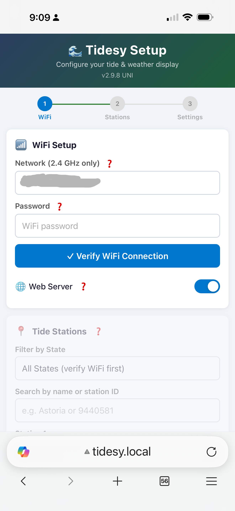
Step 3: Setup Wizard
~5 minutes
The setup wizard walks you through three steps:
WiFi Configuration
- Select your home WiFi network from the dropdown (2.4 GHz only).
- Enter your WiFi password.
- Tap Verify — Tidesy will test the connection and show your device’s IP address on success.
Station Selection
- The station directory downloads automatically on first use (~60 seconds, one-time).
- Search for your station by name or NOAA station ID.
- Select up to 3 tide stations.
Display & Alert Settings
- Choose display format: Detail (graph), Large (big numbers), or Both (auto-cycle).
- Set brightness, night mode hours, and alert preferences.
- Optionally adjust tide level warnings and preferred range.
Tap Save Configuration when done. The device will restart and connect to your WiFi.
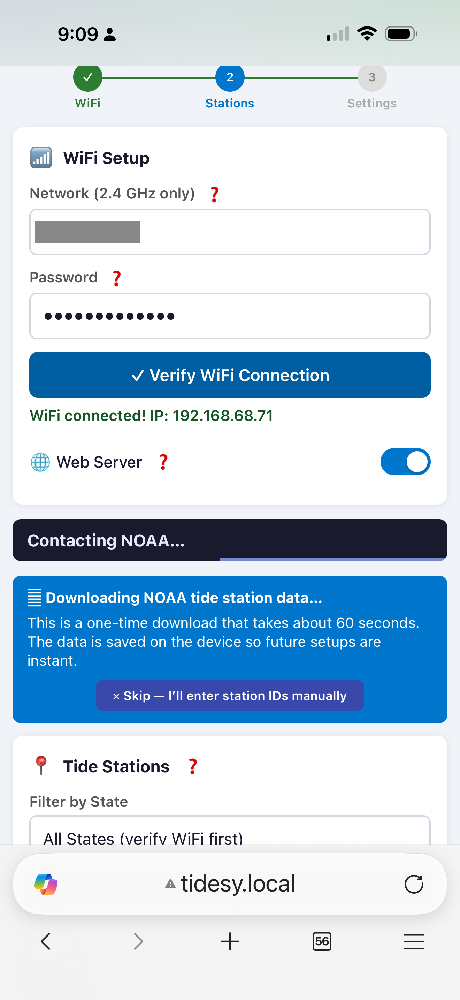
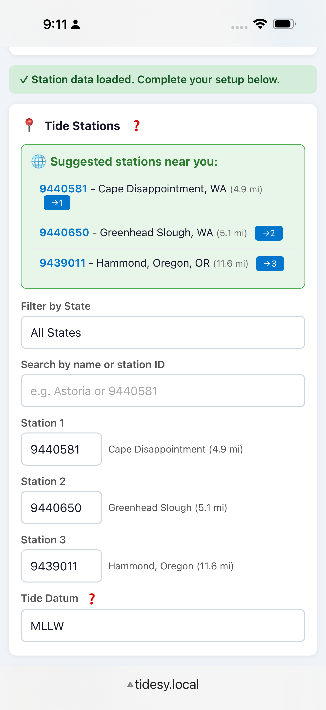
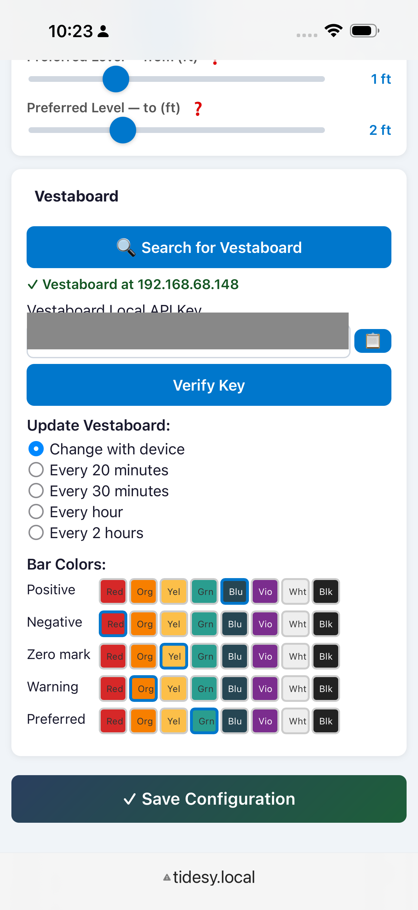
Step 4: First Run Checklist
- WiFi connected (device shows IP address on boot)
- Tide data loading (first fetch takes ~10 seconds)
- Display showing tide graph or large numbers
- Web dashboard accessible at
http://tidesy.local
Quick Troubleshooting
| Problem | Solution |
|---|---|
| Can't find TidesySetup network | Power cycle the device. Make sure your phone/computer is on 2.4 GHz, not 5 GHz only. |
| Setup page won't load | Try navigating directly to 192.168.4.1 in your browser. |
| Station download is slow | The first download is ~60 seconds. If it stalls, cancel and retry with the Refresh button. |
| WiFi verification fails | Double-check your WiFi password. Ensure the network is 2.4 GHz. |
Table of Contents
Detailed reference for every Tidesy feature
Detailed Manual
Complete reference for all Tidesy features and settings
1. About Tidesy
The Story
[PLACEHOLDER: Background story from tidesy.com — user to provide content from the Shopify site.]
What Tidesy Does
Tidesy is a dedicated smart display that brings real-time coastal data to your desk, wall, or countertop:
- Tide Predictions — 24-hour tide curves and high/low values from NOAA harmonic station data, updated every 6 minutes.
- Current Weather — Temperature and wind conditions from MET Norway’s open weather API.
- NWS Weather Alerts — Active weather alerts (coastal flood, high surf, storm warnings, etc.) from the National Weather Service.
- Multi-Station Monitoring — Track up to 3 tide stations simultaneously, cycling automatically.
- Web Dashboard — Full-featured web interface accessible from any device on your local network.
- Vestaboard Integration — Display tide data on a Vestaboard Flagship split-flap display.
Who It’s For
Boaters, fishers, beachgoers, surfers, coastal property owners, dock and marina operators — anyone who lives, works, or plays near the water and wants a glanceable, always-on tide display.
2. Understanding Tides
What Are Tides
Tides are the regular rise and fall of sea level caused by the gravitational pull of the Moon and Sun on Earth’s oceans. Most coastal locations experience semidiurnal tides (two highs and two lows per day), though some areas see diurnal (one high, one low) or mixed patterns.
Tide Datum
A datum is the reference plane from which tide heights are measured. Tidesy uses MLLW (Mean Lower Low Water) by default — the average height of the lower of the two daily low tides over a 19-year period. This means:
- Positive values = water level is above the datum (above the average low-low)
- Negative values = water level is below the datum (unusually low tide)
All tide heights on Tidesy are displayed in feet above/below MLLW unless you change the datum in settings.
NOAA Harmonic Stations
NOAA operates a network of approximately 3,000 permanent tide stations around the U.S. coastline. Each station uses harmonic analysis — mathematical models based on decades of water level observations — to predict future tide levels. Tidesy downloads predictions directly from these stations.
Reading Tide Values
On the Tidesy display and web dashboard:
- +3.2 ft means the water is 3.2 feet above MLLW (a moderately high tide)
- -0.5 ft means the water is 0.5 feet below MLLW (a very low tide)
- Typical tidal ranges vary from 1–2 ft (Gulf Coast) to 8–12 ft (New England, Pacific Northwest)
Glossary of Tide Terms
- MLLW (Mean Lower Low Water)
- The average of the lower of the two daily low tides, computed over a 19-year tidal epoch. The standard vertical datum for U.S. nautical charts.
- MSL (Mean Sea Level)
- The average sea level over a 19-year period, used as a general reference.
- Datum
- A fixed reference point or surface from which tide heights are measured.
- Slack Water
- The brief period between tidal flows when the current is near zero — occurs at the turn between flood and ebb.
- Flood Tide
- The incoming tide; the period when water level is rising.
- Ebb Tide
- The outgoing tide; the period when water level is falling.
- Spring Tide
- Tides with the greatest range, occurring near new and full moons when the Sun and Moon align.
- Neap Tide
- Tides with the smallest range, occurring near the first and third quarter moons.
- Harmonic Constituent
- A mathematical component used to model tidal patterns; each constituent represents the influence of a specific astronomical cycle.
- Semidiurnal
- A tidal pattern with two high tides and two low tides of roughly equal height each day.
- Diurnal
- A tidal pattern with one high tide and one low tide per day.
- Mixed Tide
- A tidal pattern with two highs and two lows per day, but with significant inequality in their heights.
3. Tidesy Models
Comparison Table
| Feature | TidesyL | TidesyM | TidesyS | TidesyS+ | TidesyINK |
|---|---|---|---|---|---|
| Screen Size | 7" | 5" | 2.8" | 3.5" | 4.2" |
| Resolution | 800×480 | 800×480 | 320×240 | 480×320 | 400×300 |
| Display Type | Color LCD | Color LCD | Color LCD | Color LCD | E-Paper B&W |
| Touch | GT911 Capacitive | GT911 Capacitive | None | None | 5 Buttons |
| Chip | ESP32-S3 | ESP32-S3 | ESP32 | ESP32 | ESP32-S3 |
| Graph Interaction | Yes | Yes | No | No | No |
| Bar Chart Overlay | Yes | Yes | No | No | No |
| Color Customization | Yes | Yes | Yes | Yes | No (B&W) |
| Battery Capable | No | No | No | No | Yes |
| LED Indicator | RGB | RGB | 3 LEDs / RGB | RGB | None |
TidesyL (7") Flagship
The largest Tidesy model with a 7-inch 800×480 color LCD and GT911 capacitive touchscreen. Tap the tide graph to see the tide value at any point in time. Tap the large number view to toggle a bar chart overlay. Ideal for a desk, shelf, or wall-mounted display.
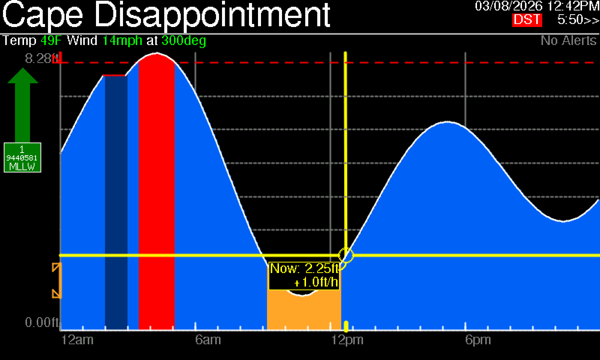
TidesyM (5") Mid-size
Same 800×480 resolution and GT911 capacitive touch as TidesyL, in a more compact 5-inch form factor. Identical software features including graph interaction and bar chart overlay.
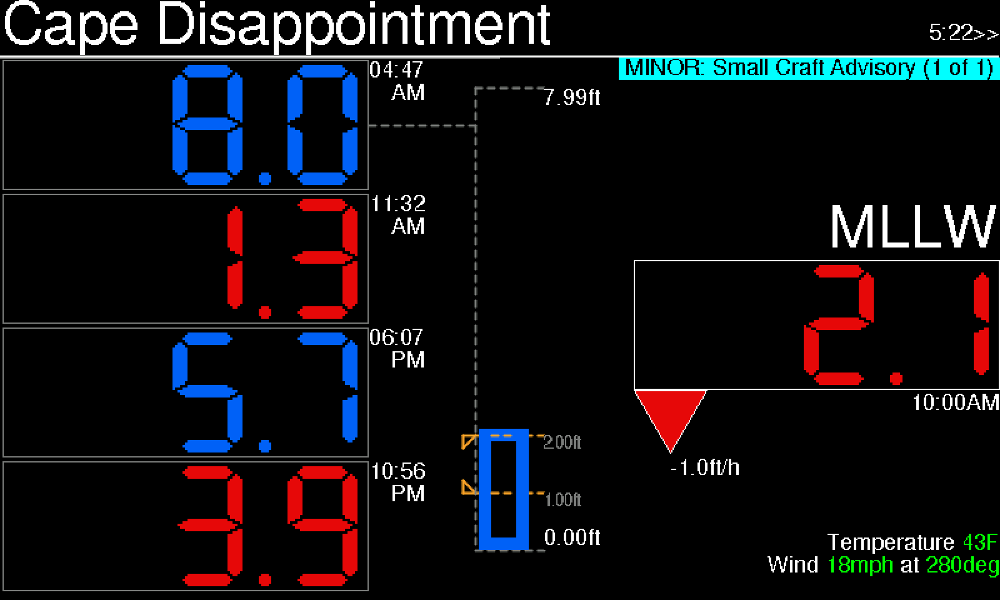
TidesyS (2.8") Compact
A compact 2.8-inch 320×240 color display. Great for a desktop or nightstand. No touch interaction on the display — use the web dashboard for full control.
The display shows the same detail and large views as the 7" and 5" models, scaled to 320×240. All tide data, weather, and graph features are available.
TidesyS+ (3.5") Enhanced Compact
An enhanced compact model with a 3.5-inch 480×320 display. Wider screen provides more room for tide data. Same features as TidesyS with a larger viewing area.
TidesyINK (4.2" E-Paper) Battery-Capable
A 4.2-inch 400×300 monochrome e-paper display. Sunlight-readable with no backlight. Can run on battery power with deep sleep between 6-minute refresh cycles. Physical button navigation instead of touchscreen.
Button Controls
| Button | Function |
|---|---|
| UP | Next station |
| DOWN | Previous station |
| OK | Toggle between Detail and Large view |
| HOME | Force refresh (fetch new data now) |
| EXIT | Enter deep sleep (battery saver) |
Power Modes
| Mode | WiFi | Refresh | Best For |
|---|---|---|---|
| High | Always on | Continuous | Plugged-in use |
| Balanced | On/off per cycle | Every 6 min | General use |
| Low | Minimal | Deep sleep between | Battery operation |
4. Setup Wizard (Detailed)
Connecting to the Hotspot
When Tidesy has no saved WiFi configuration (first boot or after factory reset), it creates a WiFi hotspot:
- Network name:
TidesySetup - Password:
tide1234 - Setup URL:
http://192.168.4.1
WiFi Configuration
Tidesy supports 2.4 GHz WiFi only. The ESP32 chip does not have a 5 GHz radio — this is a hardware limitation, not a software one. Most routers broadcast both bands; make sure you select the 2.4 GHz network.
- Network dropdown: Lists all detected 2.4 GHz networks, sorted by signal strength.
- Password field: Enter your WiFi password.
- Verify button: Tests the WiFi connection and displays the device’s IP address on success. Once verified, all other settings sections become editable.
- Web Server toggle: Enable or disable the local web dashboard (
tidesy.local). When disabled, the device runs standalone without web access.
Station Selection
Tidesy uses NOAA harmonic tide stations for predictions. On first setup, it downloads a directory of ~3,000 stations.
- One-time download: Takes approximately 60 seconds. Runs in the background using FreeRTOS tasks. A progress banner shows the download status.
- Search: Type a station name or NOAA station ID in the search box. Results appear as you type.
- State filter: Narrow results by state using the dropdown.
- Suggested stations: If your location is set (via IP detection or manual entry), nearby stations are shown with distances in miles.
- Up to 3 stations: Click a search result to assign it to a slot. You can also type a station ID directly.
- Tide datum: Default is MLLW. Most users should leave this unchanged.
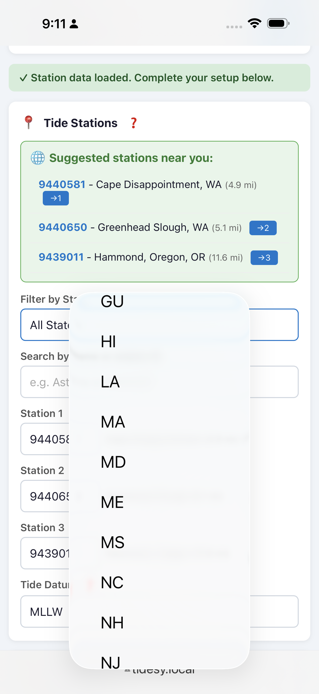
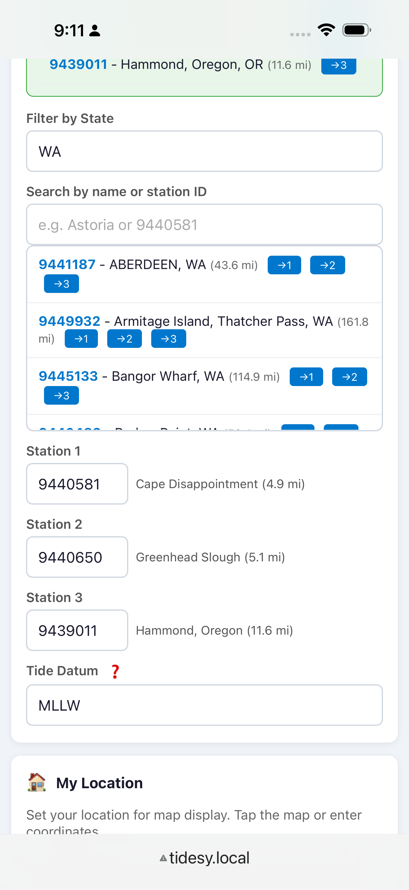
Display Settings
- Format: Detail (24-hour tide graph), Large (big tide numbers), or Both (auto-cycles between the two).
- Day brightness: 1–100% slider. Controls backlight intensity during daytime hours.
- Night brightness: 0–100% slider. Set to 0% to turn the screen completely off at night.
- Night start: PM hour (0–12). When night brightness begins.
- Night end: AM hour (0–12). When day brightness resumes.
Alert Settings
- Show Alerts toggle: Enable or disable NWS weather alert display on the device.
- Alert display duration: 10–60 second slider. How long each alert is shown before cycling to the next.
Tide Level Settings
- Warning level: −10 to +30 ft (0 = disabled). When the tide reaches this height, a colored horizontal band appears on the graph. Useful for dock clearance, flooding thresholds, or launching conditions.
- Preferred range (from/to): −10 to +30 ft (0 = disabled). A colored band shows your ideal tide range on the graph. Useful for fishing, surfing, or boat ramp access windows.
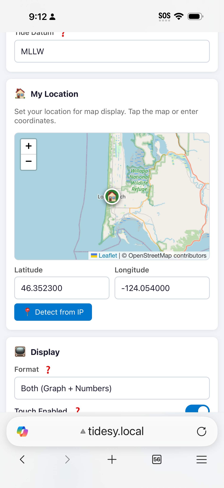
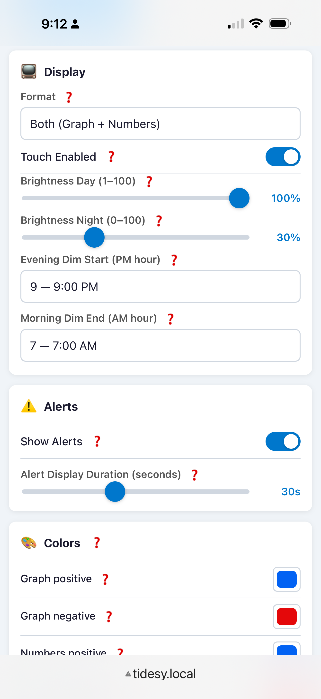
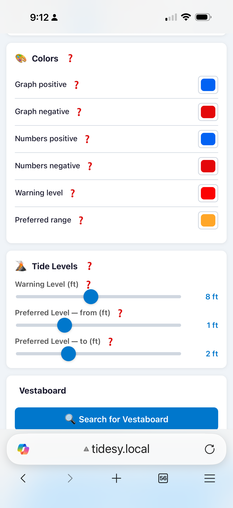
Color Settings
TidesyINK does not have color settings (monochrome display).
Six color pickers let you customize the display palette:
- Graph positive / negative: Fill colors for the tide curve above and below the zero line.
- Numbers positive / negative: Text colors for positive and negative tide values in Large view.
- Warning color: Color of the warning level band on the graph.
- Preferred color: Color of the preferred range band on the graph.
My Location
Your location is used for weather data, weather alerts, and suggested station distances. Three ways to set it:
- Interactive map: Click/tap on the Leaflet/OpenStreetMap map to place a pin. Drag the marker to fine-tune your position. The map pre-caches a large tile area so you can scroll and zoom in rural areas without losing the map.
- Manual entry: Type latitude and longitude values directly. Both fields accept negative values (south latitude, west longitude).
- Detect from IP: Button that uses ip-api.com to estimate your location from your internet connection.
Per-SSID Location Memory
Tidesy remembers the location you set for each WiFi network (up to 5 SSIDs). When you move the device to a different WiFi network and re-enter setup, it automatically recalls the location you previously picked for that network instead of reverting to the IP-detected location. If you connect to a new network for the first time, Tidesy uses IP geolocation as the starting point and saves your chosen location when you save the form. Use the Detect from IP button if you want to override the saved location with a fresh IP estimate.
Vestaboard Settings
If a Vestaboard Flagship is detected on your network, you can configure it in the wizard:
- Update interval: Single dropdown with 5 options:
- Change with device — VB mirrors whatever the Tidesy display shows, updating instantly when the view or station changes.
- 20m / 30m / 1h / 2h — Independent cycle through all stations and views at the selected interval.
5. Device Views
Detail View (24-Hour Tide Graph)
The detail view shows a 24-hour tide curve as a filled graph:
- Station name header: White text on dark gradient bar at the top.
- Y-axis: Tide height range (min to max for the day) with labeled tick marks.
- X-axis: 24 hours, divided by 4 quarter-line markers (6-hour intervals).
- Data points: 240 values at 6-minute intervals, interpolated into a smooth curve.
- Positive tides: Filled with the positive graph color (default: orange/blue depending on model).
- Negative tides: Filled with the negative graph color (default: pink/red).
- Current time marker: Yellow vertical line showing the current position in the 24-hour period.
- Live data point: Animated yellow circle at the current tide level with a 4-second pulse cycle.
- “Now” box: Two-line info box near the live data point showing the current tide value (e.g., “Now: 3.8ft”) and the rise/sink rate (e.g., “+1.2ft/h”). Text is always yellow on a black background. The box outline turns the preferred or warning color when the tide is in those zones, and blinks with a 4-second cycle to draw attention.
- Foot-level grid lines: Light dashed horizontal lines at each whole-foot level behind the tide curve for easier reading.
- Warning level band: Colored horizontal zone across the graph (if configured).
- Preferred range band: Colored horizontal zone showing your ideal tide range (if configured).
- Conditions: Temperature and wind displayed in the bottom-right area.
- Next H/L: Next high and low tide values and times displayed at the top.
- Status badges: Small status indicators appear near the countdown timer:
- DST (white on red) — shown on days when a daylight saving time transition occurs. The tide graph uses a red line segment and dimmed fill to mark the affected hour.
- SCR (white on dark green) — shown when screenshots to SD card are active (see Technical Reference).
- ! or M — alert severity indicator.
Large View (Big Numbers)
The large view displays the day’s four tide values in large, easy-to-read digits:
- 4 tide values: High/Low/High/Low in large text with times in 12-hour AM/PM format.
- Rising/falling indicator: Animated triangle pointing up (rising) or down (falling) with a 4-second fade cycle.
- Tide rate badge: Shows the current rate of change (e.g., "+2.3 ft/h").
- Weather area: Temperature, wind speed, and wind direction at the bottom.
- Current time: Displayed in the bottom area.
- Bar chart overlay: TidesyL TidesyM only — tap the screen to toggle a bar chart showing tide levels across the day.
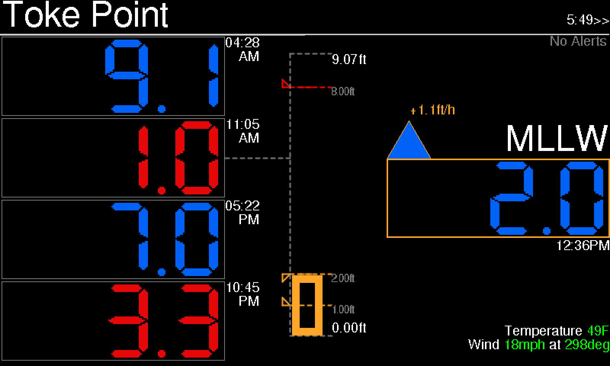
1 2 3 4 5 6 7 8Here is the large view during a falling tide — note the downward red triangle and negative rate badge:
View Cycling
When the display format is set to Both, Tidesy auto-cycles between the Detail and Large views. The cycle happens each time the data refreshes (every 6 minutes).
Station Cycling
If you have configured 2 or 3 tide stations, Tidesy rotates through them automatically. Each station is displayed for one refresh cycle (6 minutes) before advancing to the next.
6-Minute Refresh
All tide predictions, weather data, and alert information refresh automatically every 6 minutes. This matches the NOAA tide prediction interval (6-minute data points) and ensures the display stays current.
Daylight Saving Time Handling
On DST transition days, NOAA returns a different number of predictions (230 in spring, 250 in fall instead of the usual 240). Tidesy automatically detects this by parsing prediction timestamps and adjusts the graph accordingly:
- Spring forward: The missing hour (typically 2–3 AM) is shown on the graph as a red line with a dimmed fill, indicating interpolated data.
- Fall back: Duplicate predictions for the repeated hour are skipped, with a red line segment marking the transition point.
A DST badge (white text on red background) appears on the detail view during DST transition days.
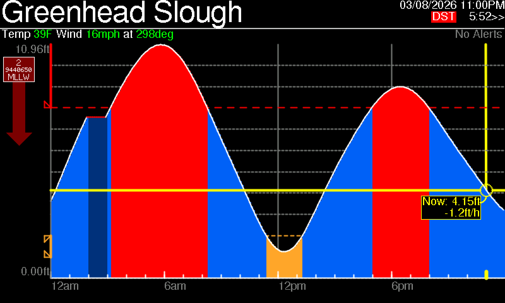
Detail view on a spring-forward day. Notice the DST badge in the top right, and the red line with dimmed fill between 2–3 AM where the missing hour is interpolated.
Status Badges & Countdown Timer
The top-right corner of the display shows status badges and a countdown timer:
Example: DST day with active alert
DST badge + ! alert indicator + countdown timer
Example: Screenshots active on DST day

SCR screenshot badge + DST badge + countdown timer
| Badge | Meaning |
|---|---|
| DST | Daylight saving time transition day detected. The tide graph marks the affected hour with a red line and dimmed fill. Detail view only. |
| SCR | Screenshots to SD card are active. Automatically removed if the SD card is ejected. See Technical Reference for details. |
| ! | Active weather alert at severity Severe or Extreme. |
| M | Active weather alert at severity Minor or Moderate. |
| 5:21>> | Countdown timer showing minutes and seconds until the next data refresh. The >> arrows animate to indicate the device is running. |
Here is the detail view with an active alert — note the ! badge and the yellow alert banner across the top:
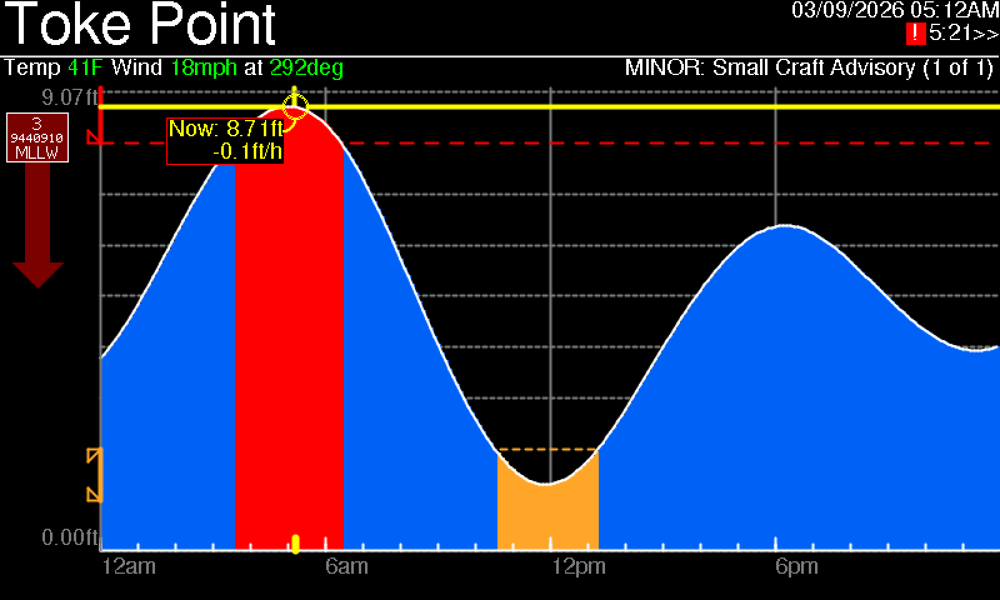
TidesyINK-Specific Display
- Monochrome only: Black and white rendering — no color customization available.
- Font: FreeSans family at various sizes (8pt, 9pt, 12pt, 18pt).
- No animations: E-paper cannot animate. The live data point and rising/falling indicator are static.
- Button-driven navigation: Use physical buttons instead of touch (see Section 13).
- 6-minute deep sleep cycle: In Low power mode, the device sleeps between refreshes to conserve battery.
6. Weather Alerts (NWS)
What Are NWS Alerts
The National Weather Service (NWS) issues active weather alerts for locations across the United States. Tidesy checks for alerts at each station’s coordinates and displays them on the device and web dashboard.
Data Source
Alerts are fetched from api.weather.gov/alerts/active using each station’s latitude and longitude. The NWS API is free, public, and requires no authentication.
Severity Levels
| Severity | Color | Meaning |
|---|---|---|
| Minor | Gray/Brown | Low-impact advisories — minor weather events or informational statements. |
| Moderate | Yellow | Significant weather events — conditions that may cause inconvenience or minor danger. |
| Severe | Orange | Dangerous conditions — significant threat to life or property. |
| Extreme | Red | Life-threatening situations — immediate action may be necessary. |
Alert Display on Device
- Cycling banner: When alerts are active, a colored banner appears at the top of the display showing the severity level, event name, and count (e.g., "1 of 3").
- Color-coded: The banner color matches the severity level (red, orange, yellow, or brown/gray).
- Cycle timing: Each alert is shown for the configured alert delay (10–60 seconds) before advancing to the next.
- Full-screen alert view: Shows station name, event heading, severity/area/effective/expires metadata displayed as severity-colored pill badges, and a description parsed into WHAT/WHERE/WHEN/IMPACTS sections (also shown as colored pills).
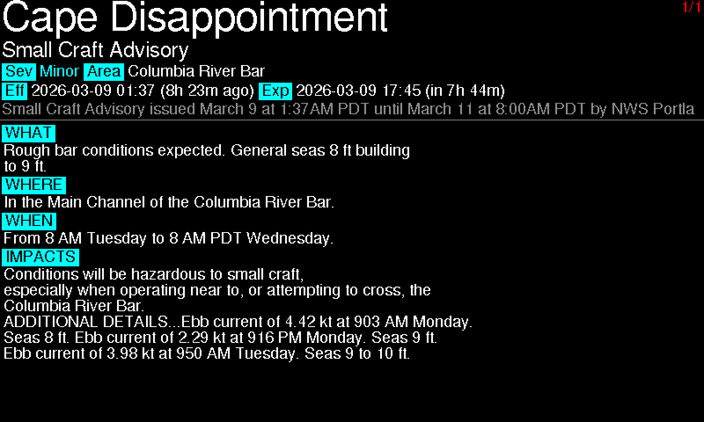
1 2 3 4 5 6 7 8 9Alert Display on Web Dashboard
The web dashboard shows alerts as styled cards with color-coded left borders matching the severity level. Tap or click an alert event name to see a popup with the NWS definition explaining what that alert type means.
Common Alert Types
Alerts most relevant to Tidesy users include:
- Coastal Flood Advisory / Warning
- High Surf Advisory / Warning
- Rip Current Statement
- Small Craft Advisory
- Tsunami Watch / Warning
- Winter Storm Warning
- Hurricane Watch / Warning
- Beach Hazards Statement
- Dense Fog Advisory
- Gale Warning
7. Web Dashboard
Accessing the Dashboard
Open a web browser on any device connected to the same WiFi network and navigate to:
http://tidesy.local(requires mDNS/Bonjour support), orhttp://<device-IP>(the IP address shown during setup, e.g.,http://192.168.1.42)
Dashboard Features
- Station cards: Each configured station has a card showing current tide data, next high/low, and weather. The NOAA station ID in the header is a link to the station’s page on the NOAA Tides & Currents website.
- Live update countdown: Timer shows when the next data refresh will occur.
- Interactive map: Leaflet/OpenStreetMap map with station markers (blue) and home location marker (green house icon). Click a station name to focus the map.
- Tide curve graphs: Chart.js-rendered 24-hour tide curves for each station with interactive tooltips.
- Alert summary cards: Active NWS alerts displayed as color-coded cards (see Section 6). Tap an alert event name to see a popup with the NWS definition of that alert type.
- Dark/light mode toggle: Switch between dark and light themes. Preference is saved.
- Home marker toggle: Show or hide your home location marker on the map.
- Responsive design: Optimized for phone, tablet, and desktop browsers.
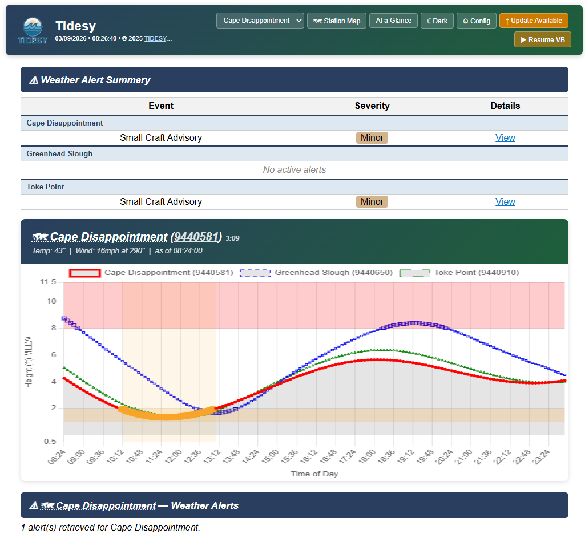
1 2 3 4 5 6Scrolling down reveals alert detail cards and the tide data table:
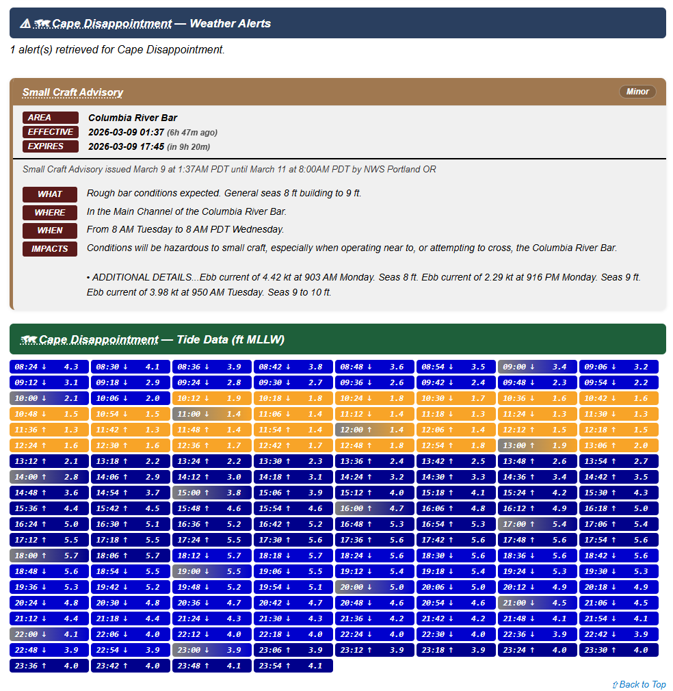
Alert card with AREA/EFFECTIVE/EXPIRES metadata, WHAT/WHERE/WHEN/IMPACTS sections, and a color-coded tide data table below.
Hover or tap a data point on the chart to see the exact time and tide value:
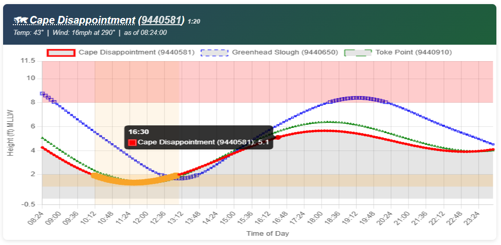
The station selector dropdown lets you jump to a specific station’s data, and the “At a Glance” popup shows all stations at once:
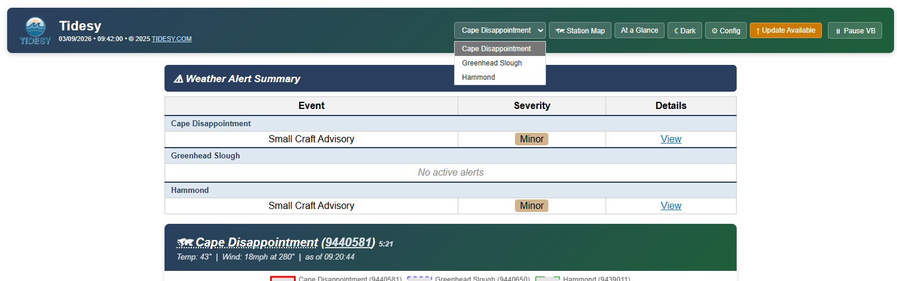
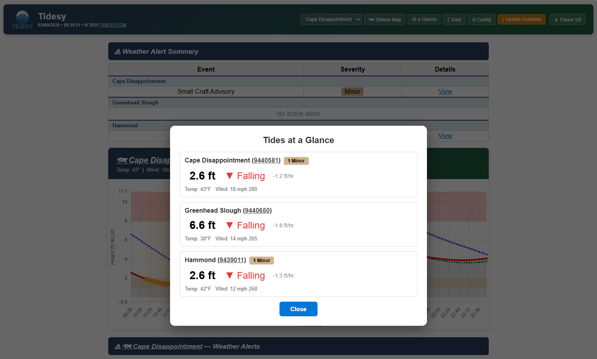
Dark Mode
Toggle dark mode using the button in the page header. The preference is saved in your browser and persists across visits. Dark mode adjusts backgrounds, text colors, card styles, and map tile contrast.
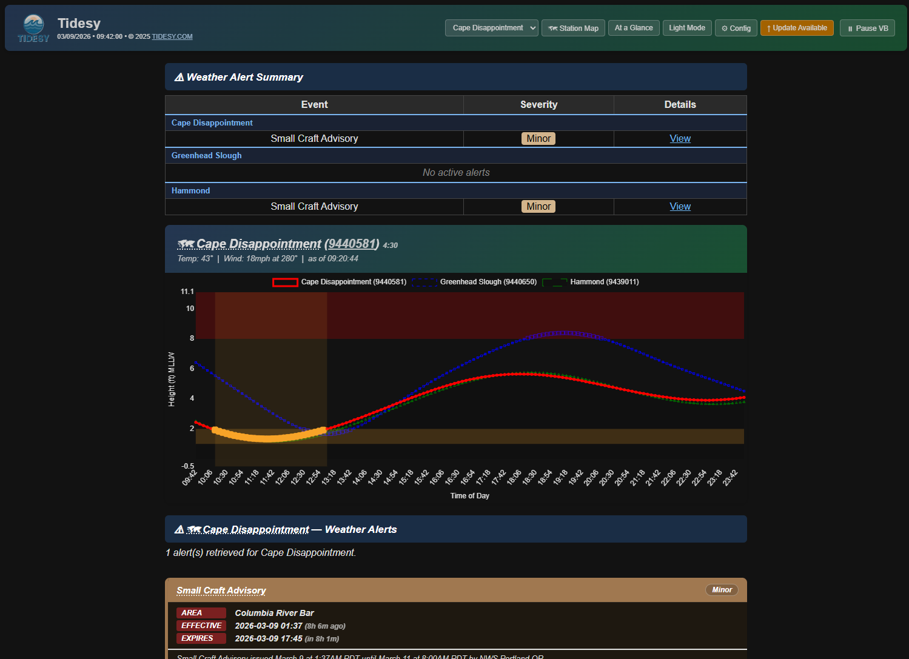
Dark mode with alert summary, tide chart, and alert detail cards.
Map
The interactive map shows:
- Station markers (blue pins) — click a station name in the data area to center the map on it.
- Home marker (green house icon) — your configured home location. Can be toggled on/off.
- Map auto-zooms to fit all markers when the page loads.
mDNS
The address tidesy.local uses mDNS (multicast DNS) to resolve to your device’s IP address. This works on most modern devices:
- macOS / iOS: Built-in (Bonjour)
- Windows 10+: Built-in
- Android: Supported on most recent versions
- Linux: Requires Avahi (usually pre-installed on desktop distributions)
If tidesy.local doesn’t resolve, use the device’s IP address directly.
Mobile Dashboard
The web dashboard is fully responsive and optimized for phone screens. The navigation collapses to a hamburger menu, and all features are touch-friendly.
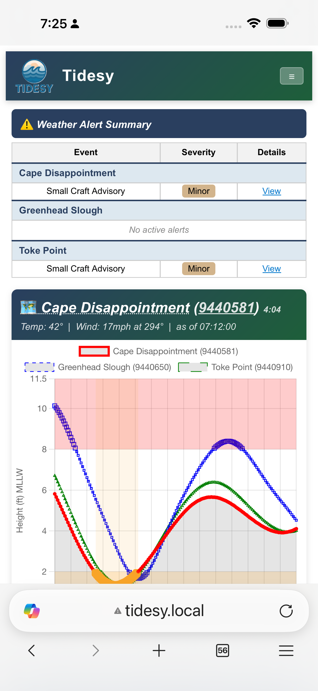
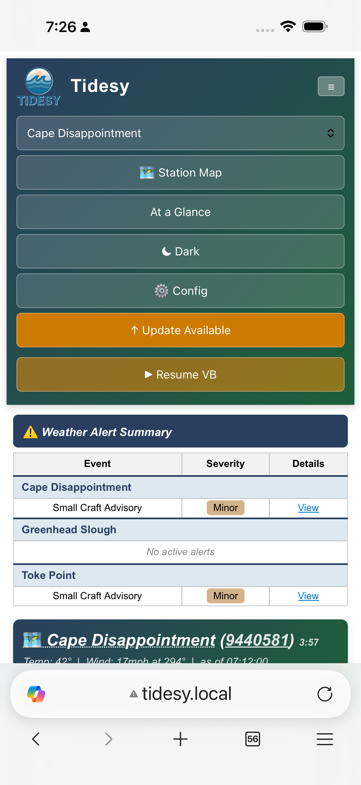
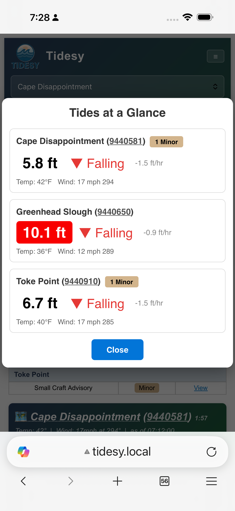
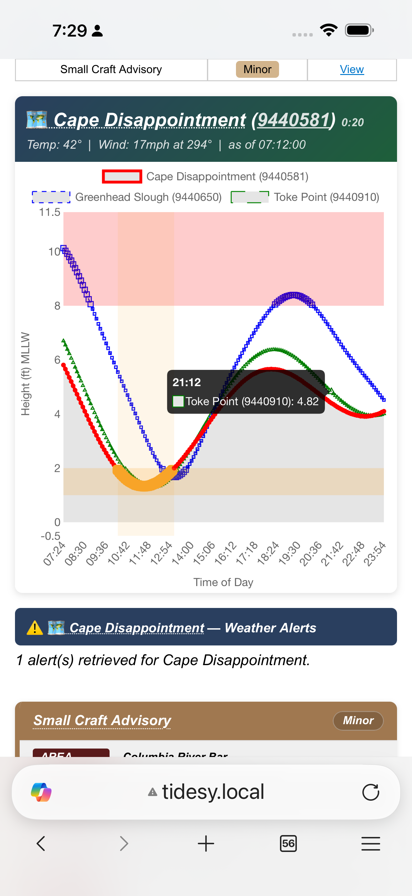
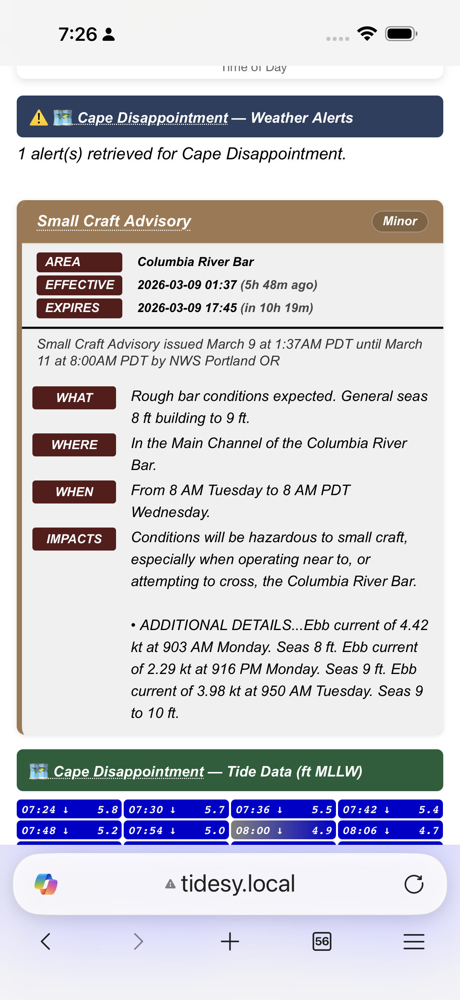
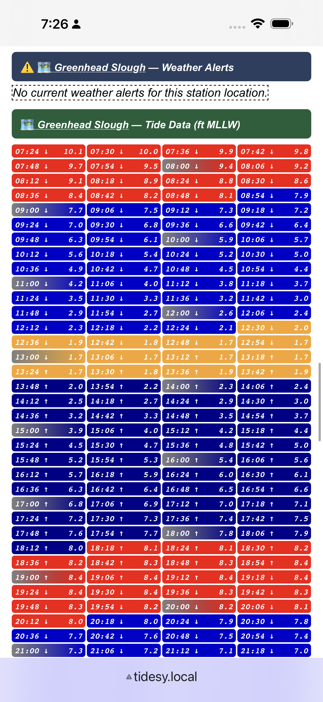
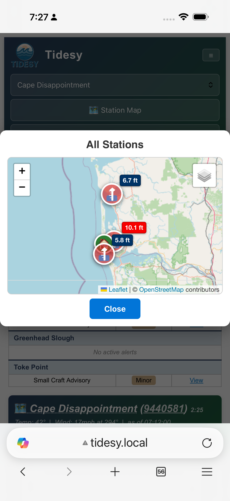
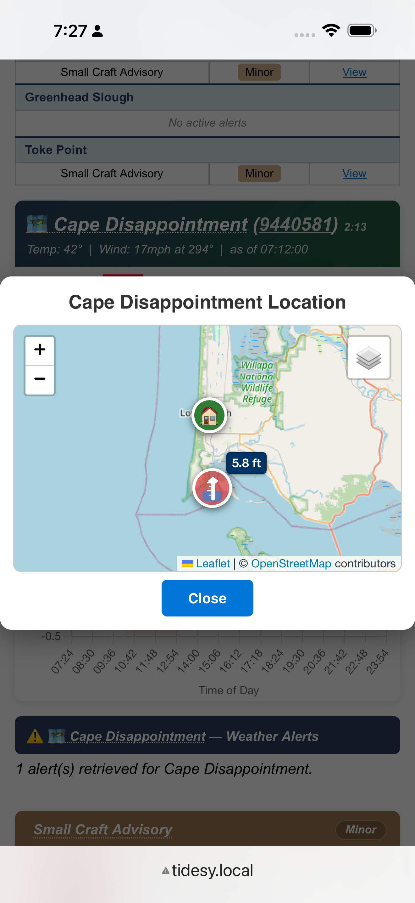
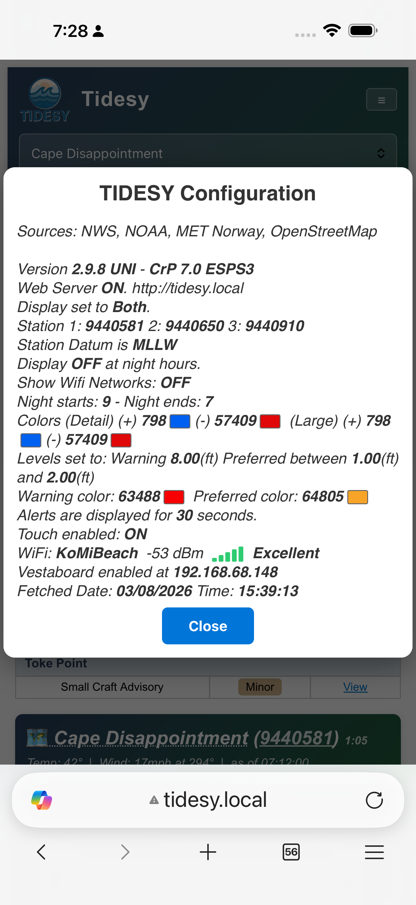
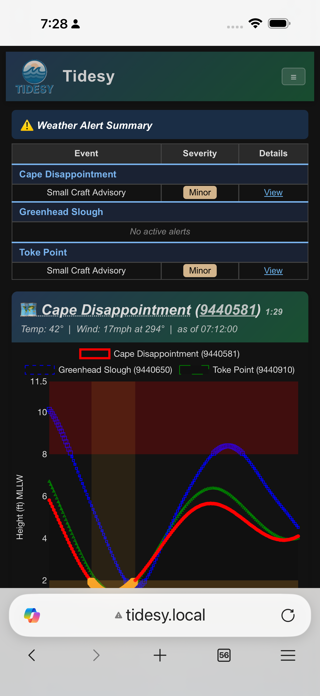
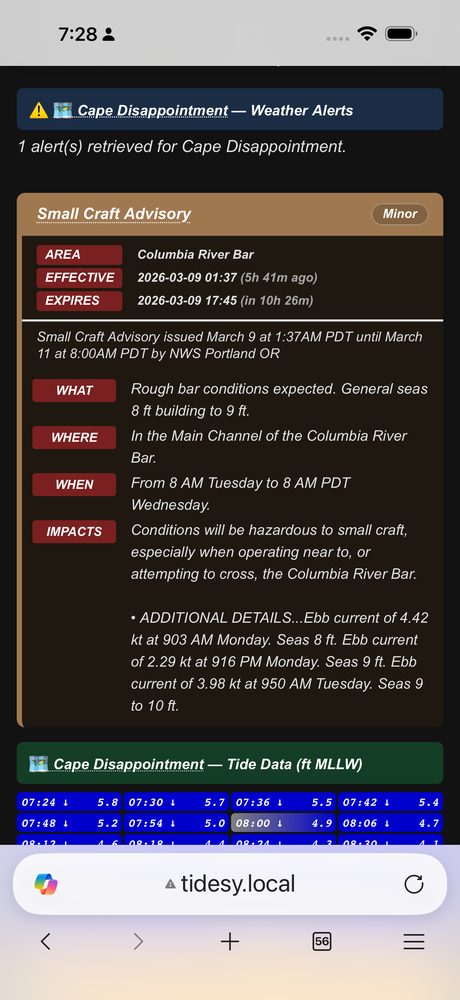
8. Vestaboard Integration
What Is Vestaboard
Vestaboard is a premium smart display that uses mechanical split-flap characters to show messages, art, and data. Each board has a 6-row × 22-column grid of split-flap tiles that can display letters, numbers, and colors. Tidesy connects to a Vestaboard on the same WiFi network to show live tide data in a beautiful mechanical format.
Compatibility
Setup
- Network scan: Tidesy scans the local WiFi network and discovers any Vestaboard Flagship devices.
- API key: Enter the local API key (22-character encoded key). Obtain this from the Vestaboard app under device settings > Local API. You can paste a key from the clipboard using the clipboard button next to the input field.
- Interval: Select how often Tidesy updates the Vestaboard (see Update Modes below).
Update Modes
| Mode | Behavior |
|---|---|
| Change with device | Mirrors the Tidesy display instantly. When the device switches stations or views, the Vestaboard updates immediately. |
| 20m / 30m / 1h / 2h | Independent cycle through all stations and views. Each station shows: detail view (2 min), large view (2 min), and alerts (for the configured alert delay). Cycles to the next station after completing all views. |
VB Colors
Vestaboard tiles support 8 colors. You can configure which colors are used for:
- Positive tide values
- Negative tide values
- Zero mark
- Warning level indicator
- Preferred range indicator
Available tile colors: Red, Orange, Yellow, Green, Blue, Violet, White, Black.
Vestaboard Views
Tidesy sends three different views to the Vestaboard, cycling through them automatically:
Detail View
Shows the day’s tide schedule with high/low times and values. A color bar graph illustrates relative tide heights. The current tide level is highlighted in green.

Large View
An at-a-glance summary showing the current tide level, rise/fall rate, next high and low, and the current date and time. A blue bar graph shows the current tide height.

Alert View
When weather alerts are active, the Vestaboard shows the alert count, severity breakdown, and event names with color-coded severity indicators (red = extreme, orange = severe, yellow = moderate).

9. Night Mode & Brightness
Automatic Switching
Tidesy automatically switches between day and night brightness based on the device’s internal clock. The clock is set via NTP (internet time) and is DST-aware.
Settings
| Setting | Range | Description |
|---|---|---|
| Day Brightness | 1–100% | Backlight intensity during daytime (from night end to night start). |
| Night Brightness | 0–100% | Backlight intensity during nighttime. Set to 0% to turn the screen completely off. |
| Night Start | 0–12 PM | The PM hour when night brightness activates. |
| Night End | 0–12 AM | The AM hour when day brightness resumes. |
TidesyINK does not have brightness controls. E-paper displays are reflective (no backlight) and are readable in any lighting condition.
10. Multi-WiFi & Network
2.4 GHz Only
The ESP32 chip supports 2.4 GHz WiFi only. 5 GHz networks are not visible to the device. This is a hardware limitation of the ESP32 radio module.
WiFi Memory
Tidesy stores up to 30 known WiFi networks. WiFi passwords are encrypted using AES-128 on the device’s flash storage.
Auto-Reconnect
If the primary WiFi network becomes unavailable, Tidesy automatically scans for and connects to the strongest known network. Networks are prioritized by signal strength.
Per-SSID Location Memory
When you move Tidesy between WiFi networks (e.g., home and beach house), the device remembers the location you set for each network. Up to 5 SSID-location pairs are stored. When you connect to a known network and re-enter setup, your previously saved location is automatically loaded instead of the IP-detected location. This means you don’t need to re-pick your location on the map every time you switch between familiar networks. Saved SSID locations are cleared on factory reset.
mDNS
The device registers itself as tidesy.local on the network using mDNS (multicast DNS). This allows you to access the web dashboard and admin panel without knowing the device’s IP address.
Required Internet Access
Tidesy requires internet access for the following services:
| Service | Domain | Purpose |
|---|---|---|
| NOAA Tides & Currents | tidesandcurrents.noaa.gov | Tide predictions and station data |
| National Weather Service | api.weather.gov | Weather alerts |
| MET Norway | api.met.no | Current weather (temperature, wind) |
| IP Geolocation | ip-api.com | Location detection (optional, setup only) |
| Firmware Updates | Shopify CDN | OTA update manifest and firmware binaries |
11. Firmware Updates
Automatic OTA Check
Every time Tidesy boots, it checks a CDN manifest file for available firmware updates. This check happens silently in the background.
Mandatory Updates
Some updates are marked as mandatory (critical bug fixes or security patches). These are installed automatically and silently — the device will download, install, and restart without user interaction.
Optional Updates
Non-mandatory updates are shown in the admin panel. You can review the update notes and choose when to install.
Update Process
- Firmware binary is downloaded as a stream (not stored entirely in memory).
- The device display shows a dedicated update screen with a green progress bar, percentage counter, and “Do not turn off” warning.
- If updating from the web dashboard, a spinner overlay tracks progress in real time.
- Device automatically restarts after a successful update.
- A “Successfully Updated” banner appears on the web dashboard showing the new version number.
Firmware Downgrade
The admin panel includes a firmware version selector that lists previous versions. Select an older version and confirm to downgrade. This downloads and installs the selected version via OTA.
SD Card Install
You can also update firmware by placing a .bin file on a microSD card:
- Download the firmware file from the Tidesy website or admin panel.
- Copy the
.binfile to the root of a FAT32-formatted microSD card. - Insert the card into the device’s microSD slot.
- Restart the device — it will detect the firmware file and install it automatically.
Update Log
All firmware updates are recorded in a log stored on the device. Each entry includes the date, version number, whether it was mandatory, and the source (OTA or SD card). View the log via the admin panel’s "Update Log" button.
12. TidesyINK Special Features
Power Modes
| Mode | WiFi Behavior | Refresh Cycle | Best For |
|---|---|---|---|
| High | Always on | Continuous (every 6 min) | Plugged-in, always-on use |
| Balanced | On during fetch, off between | Every 6 minutes | General use (default) |
| Low | Minimal (only during fetch) | Deep sleep between refreshes | Battery operation, max battery life |
Button Navigation
TidesyINK uses 5 physical buttons for navigation (no touchscreen):
| Button | Action |
|---|---|
| UP | Cycle to the next configured station |
| DOWN | Cycle to the previous station |
| OK | Toggle between Detail (graph) and Large (numbers) view |
| HOME | Force an immediate data refresh |
| EXIT | Enter deep sleep (press any button to wake) |
Battery Monitoring
When battery hardware is present, TidesyINK reads the battery voltage via an ADC pin. The voltage range is 3.0V (empty) to 4.2V (full). Battery level is displayed on the device and in the admin panel diagnostics.
E-Paper Characteristics
- No backlight: Sunlight-readable, works in any lighting condition. Not visible in complete darkness.
- No color: All graphics are rendered in black and white.
- No animations: E-paper can only do full-screen refreshes. Partial updates may show ghosting.
- 6-minute full refresh: The screen fully redraws every 6 minutes to clear ghosting artifacts.
- Slight ghosting: Faint traces of previous images between refreshes is normal for e-paper technology.
13. LED Status Indicators
LED Hardware by Model
| Model | LED Type | Location |
|---|---|---|
| TidesyS (CYD) | 3 separate LEDs (Red GPIO 4, Green GPIO 16, Blue GPIO 17) | Back of device |
| TidesyS (CROW28), TidesyS+, TidesyL, TidesyM | Single RGB LED (GPIO 38) | Back of device |
| TidesyINK | No LED | N/A |
Boot Sequence
During startup, the LED indicates progress through the boot sequence. Color changes correspond to WiFi connection attempts and initial data fetches. Once fully booted and connected, the LED settles to a steady state.
14. Touch Controls
TidesyL / TidesyM (GT911 Capacitive Touch)
These models have capacitive touchscreens with two interactive modes:
| View | Touch Action | Result |
|---|---|---|
| Detail View | Tap on the tide graph | Shows a vertical marker with the exact tide value and time at the tapped position. |
| Large View | Tap anywhere on screen | Toggles a bar chart overlay showing tide levels across the day on/off. |
Other Models
TidesyS, TidesyS+, and TidesyINK do not have active touch interaction on the display. Use the web dashboard for interactive features, or use physical buttons on TidesyINK.
15. Troubleshooting
WiFi Issues
| Problem | Solution |
|---|---|
| Can’t find TidesySetup hotspot | Power cycle the device (unplug and re-plug). Make sure your phone/computer is searching for 2.4 GHz networks, not filtering to 5 GHz only. |
| Can’t connect to home WiFi | Verify the network is 2.4 GHz. Double-check the password. Ensure the device is within WiFi range. |
| Intermittent disconnections | Check your router for stability. Reduce the distance between Tidesy and the router. Some routers have 2.4 GHz band steering that can interfere — try disabling it. |
| "WiFi not connected" on display | Verify your network is up and running. Try restarting both the router and the Tidesy device. |
Display Issues
| Problem | Solution |
|---|---|
| Blank screen | Check that the USB-C cable is securely connected and the power source provides at least 5V 2A. Try the reset button on the back of the device. |
| Frozen display | Press the reset button on the back of the device (use a paperclip for recessed buttons). |
| TidesyINK ghosting | Normal for e-paper. Ghosting clears on the next full refresh cycle (every 6 minutes). |
Data Issues
| Problem | Solution |
|---|---|
| "Fetching tide data" hangs | Check WiFi connection. NOAA API may be temporarily down — the device will retry on the next 6-minute cycle. |
| Asterisks (*) around station name | Indicates the tide data fetch failed for that station. The device will retry automatically on the next cycle. |
| "-x-" in weather area | Weather data fetch failed (MET Norway API issue). Will retry on next cycle. |
| No alerts showing | Verify "Show Alerts" is enabled in settings. Ensure your location is set. Check that your area is within NWS coverage (U.S. only). |
| Wrong tide values | Verify you selected the correct NOAA station. Check the tide datum setting (MLLW is the standard). |
Web Dashboard Issues
| Problem | Solution |
|---|---|
| Can’t reach tidesy.local | Try the device’s IP address directly. Check that your device supports mDNS/Bonjour. Verify the "Web Server" toggle is enabled. |
| Stale data | Check the countdown timer on the dashboard. Force a browser refresh (Ctrl+Shift+R). |
| Map not loading | The map requires internet access to load OpenStreetMap tiles. Check your internet connection. |
Firmware Issues
| Problem | Solution |
|---|---|
| OTA update stuck | Do not unplug the device. Wait up to 2 minutes for the update to complete. If still stuck, power cycle the device. |
| Device won’t boot after update | Hold the reset button for 5 seconds. If the device enters setup mode, try the factory reset option via the admin panel once it’s accessible. |
Vestaboard Issues
| Problem | Solution |
|---|---|
| VB not found during scan | Verify the Vestaboard and Tidesy are on the same WiFi network. Confirm the VB is a Flagship model (Note is not supported). |
| API key rejected | Re-enter the key carefully. Verify the key in the Vestaboard app under device settings > Local API. |
| Stale VB data | Check the update interval setting. Verify Tidesy has a WiFi connection. Try restarting the Tidesy device. |
16. Factory Reset & Recovery
Web Factory Reset
Navigate to tidesy.local/admin and click the red Factory Reset button. Confirm the action when prompted.
What Gets Erased
- All preferences: WiFi credentials, station selections, display settings, Vestaboard configuration, visit counter, night mode settings, colors, and location.
- All per-SSID saved locations (up to 5 network-location pairs).
What’s Preserved
- Firmware (the device keeps its current firmware version).
- LittleFS files: station directory (
stations.dat), logo image, help page.
After Reset
The device restarts and enters setup hotspot mode (TidesySetup / tide1234). You’ll need to go through the full setup wizard again.
Hardware Reset
Pressing the physical reset button on the back of the device restarts the firmware but does not erase any settings. This is equivalent to unplugging and re-plugging the device. Use this for a frozen or unresponsive display.
17. Privacy & Data
No Cloud Account Required
Tidesy operates fully locally. There is no cloud account, no login, no subscription, and no app required. The device connects directly to public APIs for data.
No Personal Data Sent
The only data Tidesy sends to external services are geographic coordinates (latitude/longitude) to fetch weather and tide data. No names, email addresses, or other personal information is transmitted.
APIs Called
All APIs used by Tidesy are public and require no authentication:
- NOAA (tidesandcurrents.noaa.gov) — Tide predictions
- NWS (api.weather.gov) — Weather alerts
- MET Norway (api.met.no) — Current weather
- ip-api.com — IP-based geolocation (used once during setup, optional)
Local Storage
All settings are stored on the device’s flash memory using the ESP32 Preferences library. WiFi passwords are encrypted using AES-128.
No Tracking
Tidesy does not include any analytics, telemetry, or third-party tracking. The device does not phone home, report usage statistics, or share data with anyone.
18. Glossary
Tide Terms
- Datum
- A fixed reference surface from which tide heights are measured.
- MLLW (Mean Lower Low Water)
- The average of the lower low water height each tidal day over a 19-year epoch. The standard datum for U.S. nautical charts.
- MSL (Mean Sea Level)
- The average height of the sea surface over a 19-year period.
- MHW (Mean High Water)
- The average of all high water heights over a 19-year epoch.
- Slack Water
- A brief period when the tidal current is near zero, occurring at the turn between flood and ebb.
- Flood Tide
- The incoming (rising) tide.
- Ebb Tide
- The outgoing (falling) tide.
- Spring Tide
- Tides with the greatest tidal range, occurring around new and full moons.
- Neap Tide
- Tides with the smallest tidal range, occurring around the first and third quarter moons.
- Harmonic Constituent
- A mathematical component representing one astronomical influence on tides (e.g., M2 for the principal lunar semidiurnal tide).
- Semidiurnal
- A tidal pattern with two nearly equal high tides and two nearly equal low tides per day.
- Diurnal
- A tidal pattern with one high tide and one low tide per day.
- Mixed Tide
- A tidal pattern with two highs and two lows per day of significantly different heights.
- Tidal Range
- The vertical difference between a high tide and the following low tide.
Technical Terms
- OTA (Over-The-Air)
- Firmware update delivered wirelessly over WiFi, without physical connection.
- mDNS (Multicast DNS)
- Protocol that allows devices to be found by name (e.g.,
tidesy.local) on a local network. - LittleFS
- A lightweight filesystem for embedded devices, used to store files on the ESP32’s flash memory.
- ESP32
- A low-cost microcontroller with WiFi and Bluetooth, manufactured by Espressif. The brain of all Tidesy models.
- E-Paper
- A display technology that reflects ambient light (like paper), requires no backlight, and retains the image without power.
- RGB565
- A 16-bit color format (5 bits red, 6 bits green, 5 bits blue) used by embedded displays. Tidesy converts web hex colors to RGB565 internally.
- NWS (National Weather Service)
- U.S. federal agency that provides weather forecasts, warnings, and alerts.
- NOAA (National Oceanic and Atmospheric Administration)
- U.S. federal agency that operates the tide station network and provides tide predictions.
Tidesy Terms
- Detail View
- The 24-hour tide graph view showing the tide curve, time marker, and weather conditions.
- Large View
- The big-number view showing four tide values (High/Low/High/Low) with times and weather.
- Warning Level
- A configurable tide height threshold that triggers a colored band on the graph (e.g., for dock clearance).
- Preferred Range
- A configurable tide height range shown as a colored band on the graph (e.g., ideal fishing or surfing window).
- Alert Delay
- How many seconds each weather alert is displayed before cycling to the next (10–60 seconds).
- Night Mode
- Automatic brightness reduction during configured nighttime hours.
- Power Mode
- TidesyINK-specific setting that controls WiFi and sleep behavior (High / Balanced / Low).
19. Quick Reference Card
Tidesy Quick Reference
tide1234
192.168.4.1
http://tidesy.local
http://tidesy.local/admin